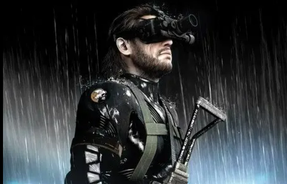
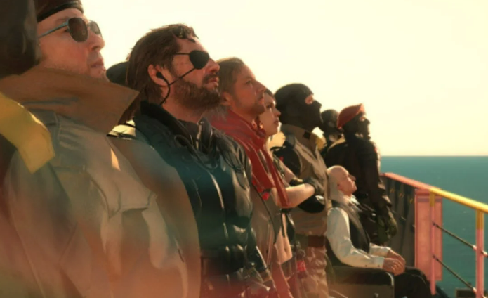

Rescate en Afganistán

The Phantom Pain se sitúa 9 años después, con MSF destruida y Big Boss despertando de un coma. Al despertar descubre que le falta un brazo. Un hombre llamado Ishmael lo ayuda a escapar del hospital anglo-chipriota, que
es atacado por un grupo militar desconocido matando a todos los pacientes del lugar, aparentemente para encontrar a Snake. Snake e Ishmael
logran llegar hasta una ambulancia donde escapan pero chocan.
Al parecer solo sobrevive Snake, que sale de la ambulancia y se encuentra con Ocelot que lo ayuda a huir. Algunos personajes que atacan el hospital parecen ser un Hombre de fuego y una joven Psycho Mantis que le controla.
Big Boss y Ocelot se dirigen a Afganistán, para rescatar a
Kazuhira Miller, quien está siendo torturado por las fuerzas soviéticas que han invadido el país.
Después de rescatar a Miller y enfrentarse a unos nuevos supersoldados llamados Skulls fundan Diamond Dogs.
Durante la Guerra en Afganistán, Snake conoce a algunos personajes
como Skull Face o la francotiradora 9 años después. Posteriormente, descubren a Huey Emmerich que está trabajando con XOF y van a por él. Además este descubre lo que parece ser un nuevo
Metal Gear llamado Sahelanthropus. En la base donde se estará desarrollando este arma tendremos que rescatar a Huey de las manos de Skull Face para finalmente huir de del Sahelanthropus.
El virus del idioma
Tras llegar a África descubre la existencia de niños soldados en la zona a quienes tendrá que liberar incluyendo a su líder,
Eli que será de raza blanca. Además Snake se enfrentará al Hombre de Fuego en una planta médica. Deciden ponerse en contacto con Code Talker, científico que trabajó con XOF sobre
los parásitos. Así se descubrirá que Skull Face ha desarrollado un virus que afecta solamente a los hablantes de inglés.
Tras esto, Snake deberá enfrentarse al Sahelanthropus en una operación conjunta junto a varios miembros de Diamond Dogs
y acabar con Skull Face.
se descubre que el Hombre de fuego era en realidad Volgin.
También los niños que fueron salvados en el África se escapan con Eli que se lleva el Metal Gear
. Luego empieza otra plaga en la base madre,
esta vez generada por Huey con el fin de vender el parásito al mejor postor, lo que le costó su exilio.
La verdad

Snake se ve obligado a matar a sus propios soldados para evitar que se propague el virus,
ya que al parecer están evolucionando. Quiet se encuentra entre la venganza contra Snake y el amor y
afecto que le acaba teniendo tras trabajar con él. Entonces se va. Acaba secuestrada por los soviéticos y tendremos que protegerle.
Snake es envenenado por una cobra y por eso Quiet se ve en la obligación de hablar en inglés para atraer al piloto
Pequod al lugar a través de la tormenta de arena. Quiet activa la plaga del inglés y al hacerlo se adentra en el desierto para no
infectar a nadie y morir sola. Ya en el final mediante una cinta nos revelan que el protagonista no es Big Boss sino el médico que
nos acompañaba.
Mientras oímos el casette se escuchan tiros de fondo y Venom Snake asume su nueva identidad de ser el fantasma de Big Boss